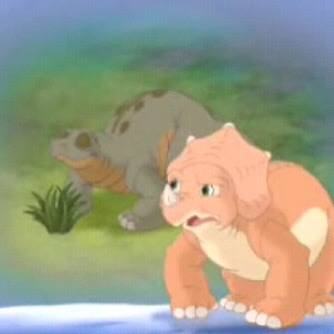
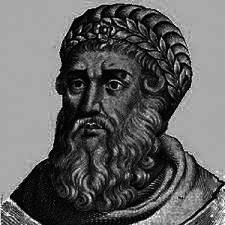
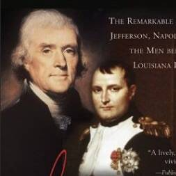
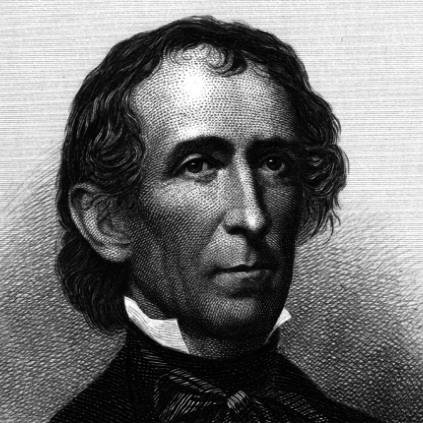
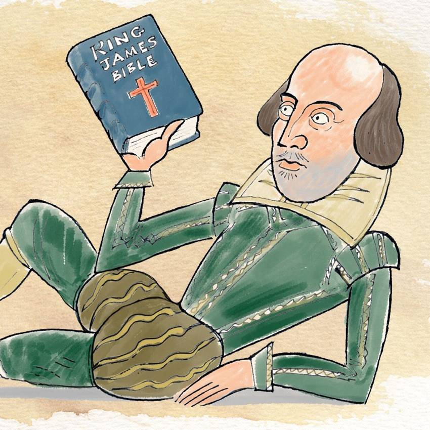

MIND BENDING RELATIVE TIME LINES.
I’m not sure if these are really “mind bending”. Maybe I should have said “somewhat interesting”. But anyway these all interested me!
-

Dinosaurs ruled the earth for a very very long time.
Modern humans have existed for at least 200,000 years and maybe as long as a million years. Dinosaurs first appeared 232 million years ago and "disappeared" (if you ignore birds) 65 million years ago. I know this will come as a shock to you but The Land Before Time was highly inaccurate. In this picture, the Stegosaurus on the left had been extinct for over a hundred million years before the Triceratops came into existence. We lived closer to Cera than she to Spike by 30 million years.
-
Oxford and Cambridge Universities were founded well before the Aztec Empire
The Aztec Empire—which we think of as ancient history, the world of Moctezuma and in part the inspiration for the film Apocalypto—ruled what is now southern Mexico until their well-known defeat by Spanish conquistadors in 1521. The empire was formally established with the treaty of the Triple Alliance in 1428. Oxford University began around 1096 and was definitely a real university by 1167. Cambridge University was founded by Oxford academics in 1209 more than 200 years before the Aztecs.
-

The New Testament King Herod reported to Mark Antony
Cleopatra says of Antony, "in his livery walked crowns and crownets" meaning Kings and Princes. This was literally true and was happening around the time of the life of Jesus. After the defeat of Brutus at the Battle of Phillipi, the triumvirate divided the republic and Judea was within Antony's territory. Herod, the King of Judea who famously ordered the massacre of all young boys in a failed attempt to kill Jesus, was put into power by Mark Antony and later made King of the Jews by the Senate.
-
"Ancient Egypt" isn't a thing. It is three or more relatively distinct things we mush together in our heads.
The great pyramids and Sphinx of Giza were built by the Old Kingdom of Egypt around 2,500 BC. The Egyptian Empire, of King Tut and Ramses, existed from 1,500 and 1,100 BC, a thousand years later. And much later, around 50 BC, Cleopatra ended the final 300 year reign of Pharaohs. She was closer to us by a thousand years than to the Sphinx, and she, Tut, and Ramses had no idea what the Sphinx was or who built it. It was pre-history to them. We know far more about these icons today than they did.
-
The Gunpowder Plot influenced Shakespeare.
In 1601, the Earl of Essex failed in his attempt to kill Queen Elizabeth. Four years later the famous Gunpowder Plot failed to kill her successor, James I. This was happening while William Shakespeare was actively writing plays. Elizabeth tried to suppress printing and performing of Richard II, whose plot centers on the deposing of a king. And some argue that Shakespeare wrote Macbeth around this time as a clear statement that killing a monarch was a bad idea, to keep the new king off his case.
-

Thomas Jefferson bought the Louisiana Purchase from Napoleon.
All American school children know about the Louisiana Purchase when Thomas Jefferson bought much of the territory that is now the central Unites States from "the French" for a bargain basement price. We also know about the great French general Napoleon and his aspirations for a European empire. These timelines line up. The purchase was negotiated between Thomas Jefferson and Napoleon, who lost interest in America during his campaign for Europe and sold Louisiana to spite the Spanish.
-

President John Tyler (born 1790) has living grandchildren.
This is more a historical oddity than anything, but Tyler, born during the George Washington presidency, the guy from the "Tippecanoe and Tyler Too" presidential campaign of 1840 had a child when he was 63 and that child went on to father children of his own at 71 and 75. So Tyler's two grandchildren were born in the 1920s and are still alive today. Needless to say they never knew their grandfather, who died 60 years before they were born.
-
Jonathan Biss, pianist born 1980, can trace his tutelage quite easily to Beethoven.
Biss learned to play the Beethoven sonatas starting at age 12 from his teacher, Leon Fleisher, who was himself taught by the great Artur Schnabel. Schnabel studied with Leschetitzky, who was taught by Czerny, who was a student of Beethoven himself. Not shocking per se when you think about the timelines, and Biss is certainly not alone here, but I still think this is very cool.
-

Shakespeare and the King James Bible are contemporaries.
The King James translation of the bible was begun in 1604 and completed in 1611. Shakespeare wrote between around 1590 and 1613. Although he references the bible frequently in his work, it is less noticeable to us because he worked from the Bishop's Bible or from Latin, not from the translation we are most familiar with.
-
Mozart and Beethoven were early admirers of the under-appreciated Bach.
Mozart was born a few years after Bach died. Unlike Bach, he was a prodigy in his day and highly admired. Bach would have been little-known to the community where Mozart made his mark. But the famously virtuosic Mozart, upon first hearing Bach played, said "That is indeed something from which we can learn!" Beethoven too called Bach his "musical bible." It would be another hundred years before audiences would come to recognize Bach's genius but the great composers were ahead of the curve.
-
Aside from the Interregnum from 1649-1660 when all theater was banned in England, not a year has gone by in 430 years that Shakespeare wasn't popular and performed regularly.
Shakespeare was wildly popular in his day, and his plays were regularly performed, reprinted, and adapted. The Puritan government of England banned theater for a few years in the 1600s. But after the ban was lifted Shakespeare was again popular and has remained so ever since. Certain plays go in and out of fashion but his work as a whole has never not been popular since it was written over 400 years ago.
-
Santa Fe, New Mexico was founded 10 years before the pilgrims landed in New England.
Santa Fe was founded by Spanish colonists arriving through Mexico and modern Texas in 1610. The Pilgrims landed at Plymouth Rock in 1620. Santa Fe became an American city by way of the Texas secession from Mexico and maintains its Spanish heritage to this day. Santa Fe has existing buildings that have been continuously occupied for 400 years.